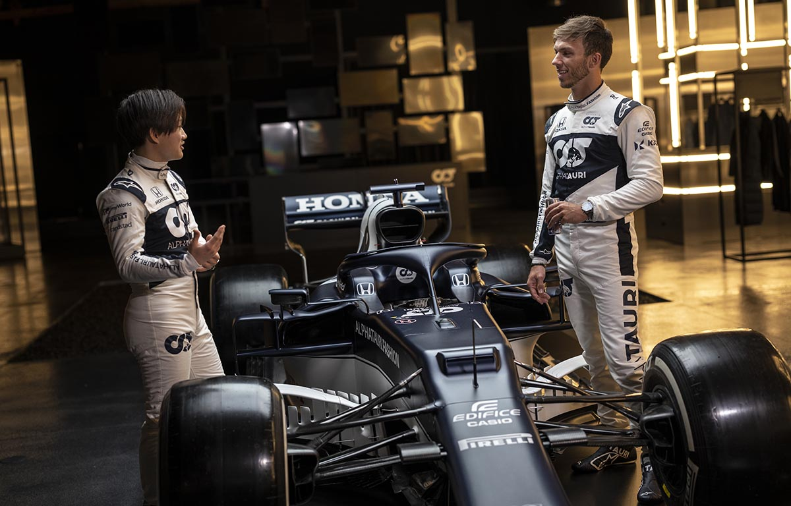

AlphaTauri lanza el AT02
Pierre Gasly y el debutante japonés Yuki Tsunoda, que le disputó el título de F2 a Mick Schumacher,
son la nueva alineación de la que se cae el ruso Daniil Kvyat. Gasly intentó por todos los medios ser
repescado para Red Bull, que al final se decidió por Checo Pérez.

El nuevo monoplaza destaca por un nuevo cono de la nariz más pequeño y estrecho,
aunque sigue teniendo una clara sección piramidal, al estilo del Ferrari del año pasado
y no llega al grado de minimalismo de Mercedes o McLaren, por ejemplo. Los brazos de la suspensión
se han elevado e inclinado y están carenados al estilo de Red Bull.
La zona media ha sido rediseñada de acuerdo a las imposiciones de la FIA, limpiando la zona inferior
de los 'bargeboards', Aquí se puede ver el cajón horizonal de hace dos temporadas de McLaren, para conducir
el aire por debajo de los pontones.
No se ha incluido la suspensión del Red Bull RB16, que pivota directamente sobre el basculante trasero, y se
sigue viendo el largo tirante metálico que va desde el triángulo inferior hasta el suelo del monoplaza. Este
concepto se dice que sí lo va a heredar Aston Martin de Mercedes, en lo que pude ser un factor decisivo de rendimiento esta campaña.